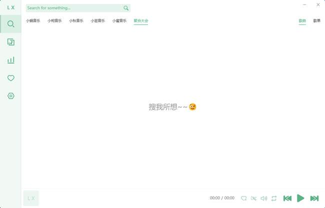
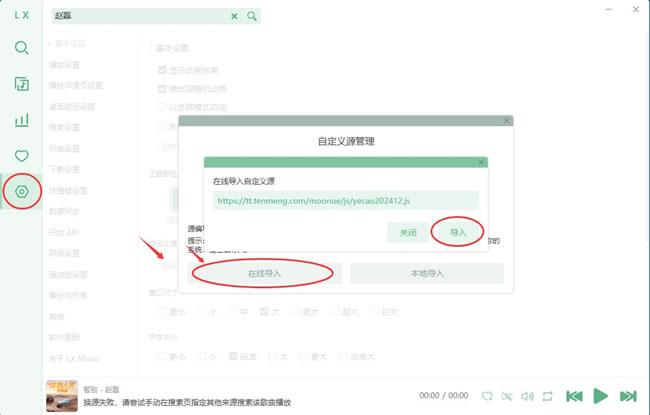

洛雪音乐快问快答——用一份清单把它讲清楚
整理一份关于洛雪音乐的快问快答：它是什么、谁适合用、音源怎么导入、杀毒误报怎么处理、跨端同步端口为什么连不上、和同类比值不值得长期留着。
整理一份关于洛雪音乐的快问快答，把大家最常问的几个问题一次性说清楚。
洛雪音乐到底是什么？一句话讲清楚
洛雪音乐官网推出的这款开源、免费、跨平台的聚合音乐播放器。它自己不存歌，通过用户导入的音源脚本去抓各大音乐平台的搜索结果和播放链接，然后在一个界面里统一呈现、统一管理。桌面版基于 Electron，移动版有 Android 和 iOS，核心定位就是「换壳聚合 + 本地播放」。

谁需要装它？不是所有人
如果你只用一个主流音乐 App 并且觉得够用——不用装。洛雪音乐适合这几类人：同时开着两三款音乐 App 来回切的，想把歌单集中在一个地方管理的，在意音质但不想为每个平台都付会员的，喜欢折腾音源脚本和自定义功能的。纯粹想「装了就能听全网」的也可以装，但要提前了解音源是第三方维护的，有时效性。
怎么装？绿色便携版和安装版哪个好
安装包从官方下载拿，Windows 下有两种选择：Setup 安装版和 green.7z 绿色便携版。便携版解压即用，不写注册表，升级时直接覆盖解压就行，适合尝鲜和不想在系统里留痕迹的人。安装版带开始菜单和桌面快捷方式，数据目录管理更规整，长期用推荐这个。无论选哪个，装完第一件事就是把安装目录和数据目录加到杀毒软件的白名单里。
音源脚本怎么搞？导入五步走，别漏了最后一步
洛雪音乐本身不托管任何音源，脚本要自己找——GitHub Issues、第三方个人博客、聚合分享包都能拿到，格式是 .js。导入路径：设置 → 基本设置 → 音乐来源 → 自定义源管理 → 导入文件 → 勾选启用。重点是最后那个「勾选」，很多人导入了但忘了勾，结果搜不到歌还以为脚本坏了。勾上之后等几秒状态变成「初始化成功」就正常了。建议一次备 2~3 个音源互为备份，单个脚本随时可能因为平台接口变动而失效。

杀毒软件报 Trojan 是真的吗？99% 是误报
国内杀毒软件对洛雪音乐的误报是常态，原因有三：没有付费数字签名的可执行文件一律被视为可疑，启发式扫描会把「下载更新包」「HTTP 请求第三方平台」「桌面歌词悬浮窗」这些正常行为误判成恶意模式，Electron 内置的 Chromium 运行时也有单独的启发式规则。洛雪音乐文档里明确声明代码开源可审计、40k+ star 社区验证——真有问题早就被揪出来了。正确做法：安装完成后把程序目录（比如 C:\Users\<用户名>\AppData\Local\Programs\lx-music-desktop）和数据目录（%APPDATA%\lx-music-desktop）加到杀毒软件的信任区，不要再让它隔离。只有当提示的文件名不是 lx-music-desktop.exe 或者检测到挖矿、远控这类明确特征时才需要警惕。
界面白屏、渲染一半、控件错位怎么办？按顺序排查
这是 Chromium 渲染层的故障，最常见的触发源是 GPU 硬件加速。排查顺序不要乱：先切到默认主题试试——说不定就是某个主题在当前 Electron 版本上有 CSS 兼容性问题；没用就禁用 GPU 加速，启动参数加 --disable-gpu，快捷方式属性里改目标路径就行；还是不行就检查显卡驱动，NVIDIA 用 GeForce Experience、AMD 用 AMD Software、Intel 用 Intel Driver & Support Assistant；第四步清除缓存——删掉 %APPDATA%\lx-music-desktop 里的 cache 文件夹，下次启动自动重建；最后才考虑升级版本或者重装。加了 --disable-gpu 就恢复正常的话，短期可以一直用这个参数启动，长期还是建议更新显卡驱动。
手机连不上桌面版的跨端同步？八成是 23332 端口被拦
同步失败先做一件事：在电脑自身浏览器打开 http://127.0.0.1:23332/hello，如果能看到 Hello~::^-^::~v3~，说明服务本身正常。然后拿手机连同一 Wi-Fi，浏览器打开 http://<电脑IP>:23332/hello。手机能打开 → 问题在软件内部，检查两端版本（桌面版 ≥ v2.4.0、移动版 ≥ v1.1.0）；手机打不开 → 99% 是防火墙或者 AP 隔离。最快的验证法是临时关掉 Windows Defender 防火墙再试一次——关了就通那就是防火墙拦截，去「允许应用通过防火墙」里把 lx-music-desktop.exe 的公用和专用两个勾都打上。关了还是不通，去路由器管理页找「AP 隔离」或「客户端隔离」关掉，ping 一下手机 IP 能通就解决了。
和同类软件比怎么样？它的优势和短板都在哪里
洛雪音乐的优势很明确：开源透明、社区活跃、音源生态丰富、跨端同步稳定、界面颜值和可自定义程度都不错。对比同类的 XX 音乐盒子、XX 音乐等，它的代码完全公开可审计，不存在偷偷收集用户数据或被植入广告的风险。短板也不用避讳：音源脚本依赖第三方，有时效性，平台接口一变更就会失效，需要用户自己维护；Electron 包体较大，内存占用比原生客户端偏高；iOS 端受苹果审核限制，功能不如 Android 端完整。如果在意长期可控性和安全性，洛雪音乐是首选；如果想要开箱即用完全不折腾，可以考虑闭源但音源内置的同类产品。
值不值得长期用？最后一句结论
值得。 音源脚本稍微维护一下就能用得很稳，开源透明让你完全掌控自己的播放数据，跨端同步把歌单和收藏串起来之后就再也回不去了。唯一的门槛是第一次接触音源概念需要花十分钟搞清楚怎么导入，过了这个坎之后就是纯享受了。它的开源资料在 GitHub 上最完整，国内访问可以直接去 Gitee 或 GitCode 的镜像仓库。